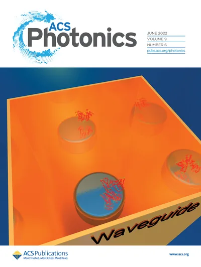
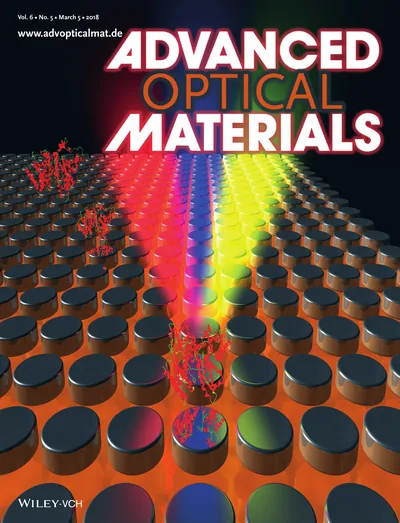

Quantum sensing, cryogenic sensing, and applied metrology
Papers and articles on cryogenic sensing, MRI metasurfaces, sensing with embedded eigenstates, and diamond magnetometry.

On journal covers


Relevant Publications
More papers on the Publications page and Google Scholar.
- M. M. Hasan, I. Torres, and A. Krasnok, “Quantum Magnetometers for Infrastructure Inspection and Monitoring,”Measurement 290, 122735 (2026).doi:10.1016/j.measurement.2026.122735
- A. Krasnok, “Quantum sensors use atoms, electrons and light as ultra-steady rulers, detecting faint motion, magnetism and gravity for navigation, medicine and science,”The Conversation (2026).The Conversation
- I. Torres, R. Rodriguez, R. W. Laird, A. R. Laird, and A. Krasnok, “Twist-Tuned Bilayer Metasurface for 3 T MRI,”Journal of Physics D: Applied Physics, under consideration. arXiv:2603.22639 (2026).doi:10.48550/arXiv.2603.22639
- I. Torres and A. Krasnok, “A cryogenic dielectric antenna for wireless sensing and interfacing outside the 10 K environment,”Cryogenics 155, 104286 (2026).doi:10.1016/j.cryogenics.2026.104286
- R. E. Jacobsen, A. Krasnok, S. Arslanagic, A. V. Lavrinenko, and A. Alù, “Boundary-Induced Embedded Eigenstate in a Single Resonator for Advanced Sensing,”ACS Photonics 9(6), 1936-1943 (2022).doi:10.1021/acsphotonics.1c01840
- A. Krasnok, M. Caldarola, N. Bonod, and A. Alù, “Spectroscopy and Biosensing with Optically Resonant Dielectric Nanostructures,”Advanced Optical Materials 6(5), 1701094 (2018).doi:10.1002/adom.201701094
- A. E. Krasnok et al., “Enhanced Emission Extraction and Selective Excitation of NV Centers with All-Dielectric Nanoantennas,”Laser & Photonics Reviews 9(4), 385-391 (2015).doi:10.1002/lpor.201400453
- A. P. Slobozhanyuk, A. N. Poddubny, A. Krasnok, and P. A. Belov, “Magnetic Purcell Factor in Wire Metamaterials,”Applied Physics Letters 104(16), 161105 (2014).doi:10.1063/1.4872163